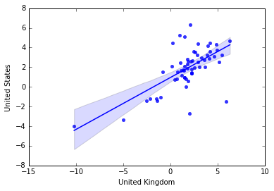

Data Science Portfolio - Jay Dhiru
Click here for my Data Science Project
This COVID cases chart is the first of 2 charts from RapidCharts that I initally embedded onto this site.
This UK Productivity Chart is the second of 2 charts from RapidCharts.io that I initally embedded onto this site.
This football chart was also taken from RapidCharts.io as part of a task to embed any chart of my choosing and become familiar with embedding charts.
This COVID vaccine chart was part of a task to create a chart which runs using data directly from an API. As such it will automatically update as new data is added to the API.
This COVID cases chart runs from a csv file hosted on my Github repository and does not automatically update, but the data is from the same government API as the chart just before.
This is a simple bar graph of the goals scored by the "Big 6" Premier League teams. The task was to create a graph using inline JSON data that I've written myself.
This is a chart where I edited data by adding another series to a dataset and graphing them together. Deaths are not accurate, rather scaled up by ~90x to better visualise trends between cases and deaths.
This is a chart showing USA CPI over time, as part of a task to use APIs of my own choosing that I sign up for.
This chart uses data from another API I signed up for as part of the aforementioned task
The following 4 charts were created using data from the FRED API. I used a Python script in Google Colab to loop over 4 variables and batch download data in an automated process. The relevant python file is FREDlooping.ipynb which can be found in my Github repository or below
Click here for the relevant Python file
For this chart I used Python within Colab and Pandas to scrape a Wikipedia website and return a useable dataset of sales for some popular manga.The relevant python file is MangaScraper.ipynb which can be found in my Github repository or below
Click here for the relevant Python file
This GDP chart was made to fact-check a statement made by Dimitri Zenghelis at the Talking Economics event. He mentioned that the 90s and early 2000s were a period of high economic confidence and strong growth. As the graph shows, this is entirely correct as growth never dipped below 2% in this period.
This graph was made as part of a task to do some higher level analysis. As such I regressed GDP growth for the USA and the UK against each other. This regression returned an equation of y = 0.53x + 0.94 and an R^2 value of 0.43, which indicates a moderate level of correlation between the two variables.

This is the first interactive chart as part of a task to create 2. For this chart, there is a dropdown menu to select which continent you would like data for.
This is my final chart and the second interactive chart I created. You can select a group of adjacent bars by clicking and dragging. The average of these bars is then calculated and represented by the red line. The relevant python file I used to scrape this data is CrimeScraper.ipynb which can be found in my Github repository or below
Click here for the relevant Python file